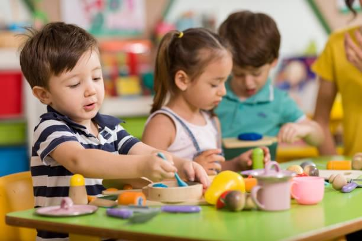
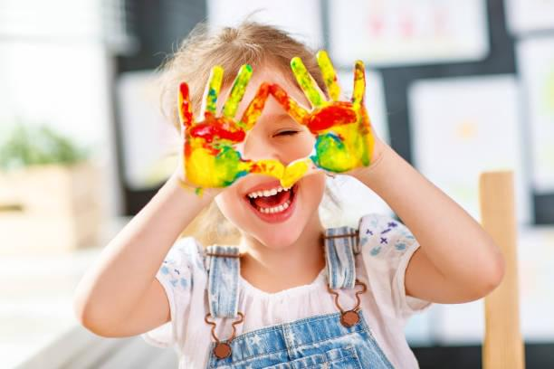
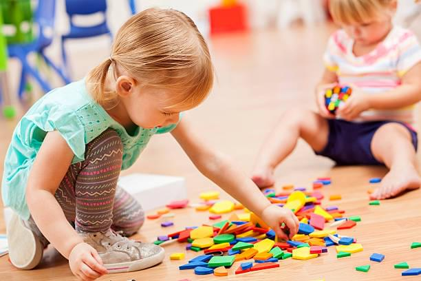
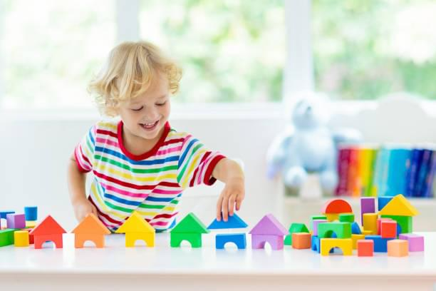

Детский сад СОСНЫ
Здесь начинается Детство
О нас
Детский сад СОСНЫ
расположен вдали от города и шумный дорог, там, где кругом лес и свежий воздух.
Мы принимаем детей в группы
с 3 лет до 7 лет
Именно в детском саду у ребенка вырабатываются первые навыки общения, способствующие его дальнейшей социализации. Уже в два года дети активно идут на контакт как со взрослыми, так и со сверстниками. У малыша могут появиться первые друзья, он учится взаимодействовать с коллективом, находить выход из конфликтных ситуаций.
Программа дошкольного учреждения ориентирована на всестороннее развитие личности ребенка. Для этого воспитатели проводят многочисленные занятия различной направленности. Большое внимание уделяется физической культуре, ведь именно от нее зависит здоровье будущего поколения. Ребята делают утреннюю зарядку, посещают спортивные занятия. Детский сад создает благоприятные условия для развития творческих способностей. Малыши занимаются пением, танцами, рисованием, лепкой, изготавливают поделки. Дети средней и старшей группы принимают участие в торжественных утренниках, ставят интересные номера, разыгрывают сценки. Также воспитатели проводят занятия, направленные на воспитание у детей чувства патриотизма, любви к родному краю и т. д.
Наши группы
- 
Младшая группа
- 
Средняя группа
- 
Старшая группа
- 
Подготовительная группа
Наша команда
Хотите сделать своего ребенка счастливым?
Приходите к нам